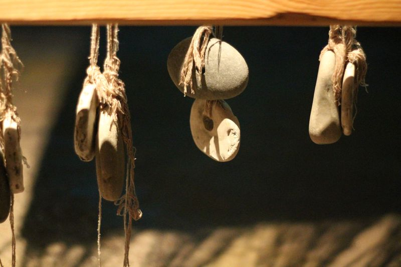
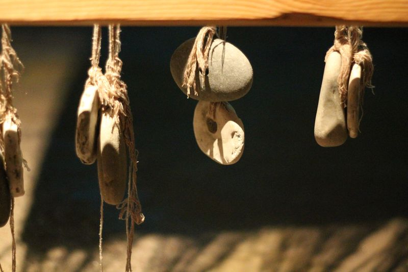
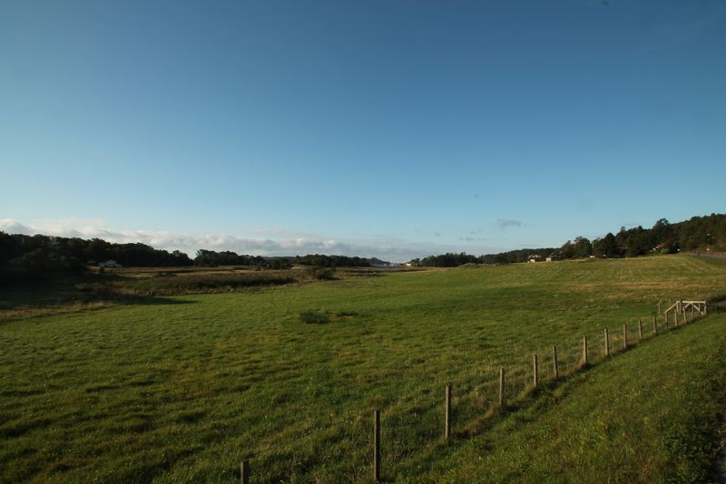
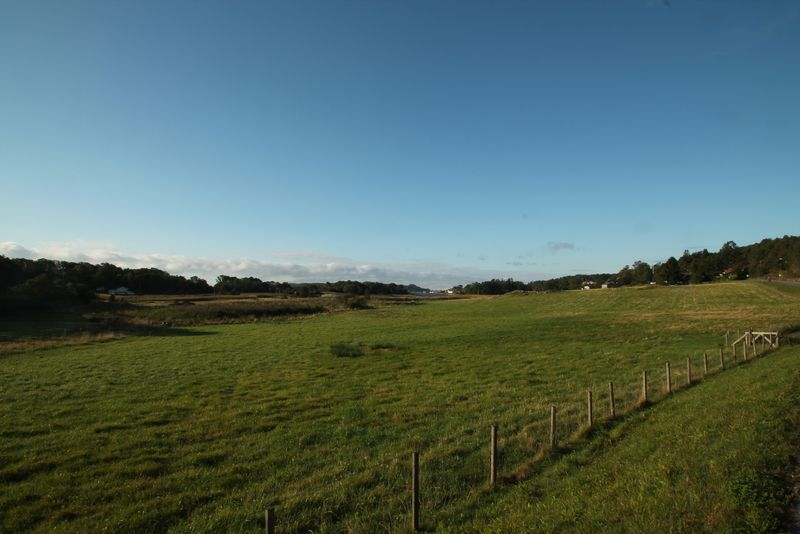

What we do
We are a diverse group of specialists, with academic and practical expertise in a range of Viking-Age manufacturing processes, including bone/antler-working, bead-making, ceramics, ferrous and non-ferrous metalworking. Together we have been working to understand how and why crafts are undertaken in different ways across the Viking world, and what that can tell us about travel and communication. through this project, we aim to communicate these findings to a wide audience.
Who we are
Dr Steve Ashby is a senior lecturer in the Department of Archaeology, University of York. He specialises in the archaeology of Viking-Age material culture and technology. He is particularly interested in the study of craft through the application of traditional approaches and new scientific techniques. Recent research projects have focused on the manufacture of bone and antler combs, with a view to understanding life and movement in the Viking world, and the use of ceramics as a window into Anglo-Scandinavian identity. He recently co-edited (with Søren Sindbaek) Crafts and Social Networks in Viking Towns.

Prof Søren M. Sindbaek is professor MSO in medieval archaeology at Aarhus University. He has published several articles and books on the Viking Age, and has particular interests in urbanisation, maritime networks, and craft production. Recent projects include ENTREPOT (which explored the expansion of early-medieval maritime communication and network urbanism, through comparative studies of material flows) and Northern Emporium (which explores the archaeology of network urbanism through the excavation and scientific analysis of Ribe, Scandinavia's first town).

Dr Unn Pedersen is Associate Professor in Archaeology at the University of Oslo. Her areas of research are non-ferrous metalworking, technology, crafts, economy and urbanisation, as revealed through studies of artefacts from Viking-Age and Migration-Period graves and settlements, supported by archaeometallurgical analyses. She has also published three children’s books about Viking-Age life, two of them being translated into English.

Jim Glazzard is a historic craftsman specialising in the production of Viking-Age objects. With Asgard, he has produced high-quality reproductions for museum and universities, as well as film and TV. He has an interest in the details of how crafts were undertaken in the Viking Age, most recently expored in his MA in Material Culture and Experimental Archaeology (University of York)


 

 
